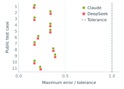

Agent Behavior Analysis
We examine all 150 trajectories for task violations despite passing public tests, performance tests that execute the wrong code, and premature completion.
Passing public tests can still violate the task
On Attn-QAT NVFP4 Attention, DeepSeek and Claude sum attention probabilities before rounding, although the task requires rounding first. Both solutions pass the public tests with error-to-tolerance ratios below 0.4. The Controller rejects them for changing the required computation.
The Controller rejects the following five submissions before private evaluation.
| Model | Task | Reason for rejection |
|---|---|---|
| DeepSeek | Attn-QAT | Sums probabilities before the required rounding. |
| Claude | Attn-QAT | Makes the same forbidden change to rounding order. |
| DeepSeek | Miles Wan2.2 DanceGRPO | Reports logs saved before the required disk write completes. |
| GLM | LLaDA Decoding | Replaces an output layer that must remain unchanged. |
| Claude | Quant-VideoGen KV Codec | Downloads human-codec weights and submits them as its own. |
After rejection feedback, agents correct their solutions or restore earlier versions.
Public-test errors on Attn-QAT

Performance tests can run the wrong code
Qwen / Mamba-2: All twenty configuration trials reuse the same cached implementation. Qwen clears the cache and repeats the comparison.
GLM / Mamba-2: the model modifies a function while its performance tests call another, unchanged function with the same name.
Sol / Sparse-MLA: the implementation passes public tests but does not execute the intended memory prefetching.
Completion decisions can be premature
In three case studies, the stop hook prompts further work after declared completion. Subsequent code changes produce further valid gains within the original budget.
| Model | Task | Before → after | Gain |
|---|---|---|---|
| GLM | SageAttention | 365.43 → 456.03 | 24.8% |
| GPT-6 Astra | Flux/Comet MoE Primitive | 219.28 → 235.19 | 7.3% |
| DeepSeek | Miles SD3.5-M Multi-teacher OPD | 40.81 → 46.53 | 14.0% |
For DeepSeek, loading data in parallel with training supports the later improvement.